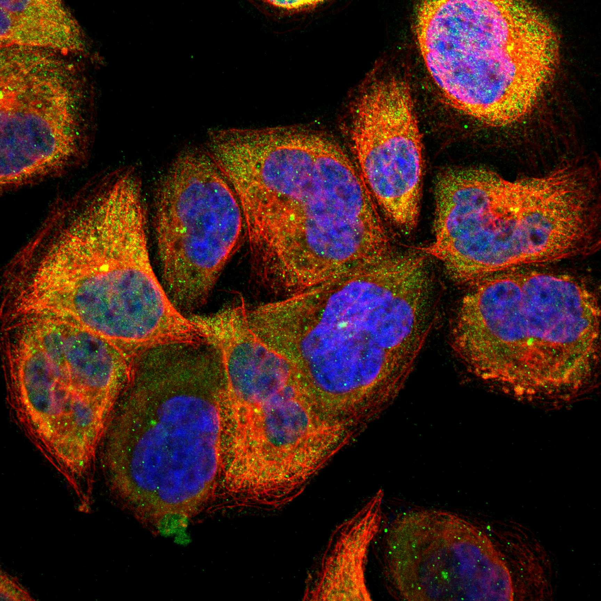
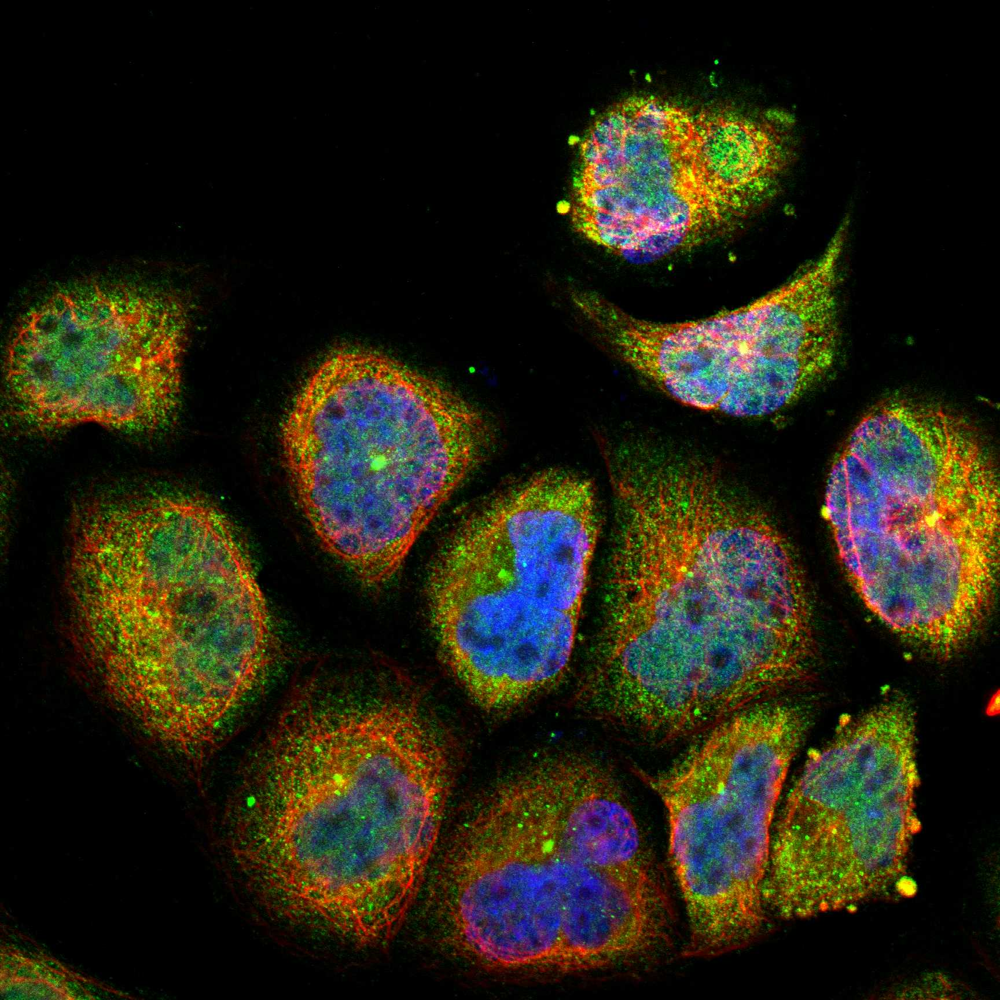
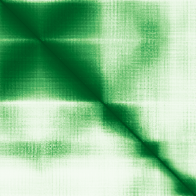

type: protein-evaluation gene: "CHMP1A" date: 2026-05-30 tags: [protein-scout, nuclear-protein, evaluation] status: scored ---
CHMP1A 核蛋白评估报告
1. 基本信息
| 项目 | 内容 |
|---|---|
| 基因名 / 别名 | CHMP1A / Charged multivesicular body protein 1a |
| 蛋白大小 | 196 aa / 21.7 kDa |
| UniProt ID | Q9HD42 |
| 评估日期 | 2026-05-30 |
2. 评分总览
| 维度 | 得分 | 满分 | 加权后 | 关键证据摘要 | |||
|---|---|---|---|---|---|---|---|
| 🔴 核定位特异性 | 4/10 | ×4 | 16 | Cytoplasm; Endosome membrane; Nucleus matrix | |||
| 📏 蛋白大小 | 8/10 | ×1 | 8 | 196 aa / 21.7 kDa | |||
| 🆕 研究新颖性 | 4/10 | ×5 | 30 | PubMed 66 篇 | |||
| 🏗️ 三维结构 | 9/10 | ×3 | 27 | AlphaFold v6 pLDDT=77.9，PDB: 2JQ9, 2YMB, 4A5X | |||
| 🧬 调控结构域 | 7/10 | ×2 | 14 | InterPro: IPR005024 - Snf7_fam; Pfam: PF03357 - Snf7 | |||
| 🔗 PPI 网络 | 3/10 | ×3 | 9 | STRING 20 partners, IntAct 198 interactions | |||
| ➕ 互证加分 | — | max +3 | 2.5 | PDB+AF+STRING+IntAct cross-validation | |||
| 原始总分 | 97/183 | 94.0/183 | |||||
| 归一化总分 | 53.0/100 | 51.4/100 |
3. 详细分析
3.1 核定位证据
| 来源 | 定位 | 可信度 |
|---|---|---|
| UniProt | Cytoplasm; Endosome membrane; Nucleus matrix | Swiss-Prot/TrEMBL |
| Protein Atlas (IF) | 暂无数据 | 暂无 HPA IF 数据 |
 
结论: 核定位信号较弱，HPA 暂无 HPA IF 数据。
3.2 蛋白大小评估
评价: 大小基本合适，可用于常规实验。
3.3 研究现状
| 指标 | 数值 |
|---|---|
| PubMed 总数 | 66 |
| 研究方向 | 待补充关键文献摘要 |
评价: 有一定研究基础，但仍存在未探索的niche空间。
关键文献: 1. Kong L et al. (2023). "The landscape of immune dysregulation in Crohn's disease revealed through single-cell transcriptomic profiling in the ileum and colon". *Immunity*. PMID: 36720220 2. Cheng Y et al. (2025). "Classical swine fever virus hijacks ESCRT-III and VPS4A to promote phagophore closure for accelerating mitophagy". *Autophagy*. PMID: 40574328 3. Marie PP et al. (2023). "Accessory ESCRT-III proteins are conserved and selective regulators of Rab11a-exosome formation". *J Extracell Vesicles*. PMID: 36872252 4. Li J et al. (2009). "Chmp 1A is a mediator of the anti-proliferative effects of all-trans retinoic acid in human pancreatic cancer cells". *Mol Cancer*. PMID: 19216755 5. Lin Z et al. (2023). "Potential biomarkers in peripheral blood mononuclear cells of patients with sporadic Ménière's disease based on proteomics". *Acta Otolaryngol*. PMID: 37603046
3.4 三维结构分析
| 指标 | 数值 |
|---|---|
| AlphaFold 版本 | v6 |
| AlphaFold 平均 pLDDT | 77.9 |
| 高置信度残基 (pLDDT>90) 占比 | 24.5% |
| 置信残基 (pLDDT 70-90) 占比 | 49.5% |
| 有序区域 (pLDDT>70) 占比 | 74.0% |
| 可用 PDB 条目 | 2JQ9, 2YMB, 4A5X |
PAE 图:

评价: PDB 实验结构（2JQ9, 2YMB, 4A5X）+ AlphaFold 高质量预测（pLDDT=77.9），结构可信度高。
3.5 结构域分析
| 来源 | 结构域 |
|---|---|
| InterPro/Pfam | InterPro: IPR005024 - Snf7_fam; Pfam: PF03357 - Snf7 |
染色质调控潜力分析: 存在注释结构域：InterPro: IPR005024 - Snf7_fam; Pfam: PF03357 - Snf7...。新颖蛋白基线不扣分。
3.6 PPI 网络
STRING 预测互作 (combined score >0.4):
| Partner | Score | 功能类别 | 调控相关？ |
|---|---|---|---|
| VPS4B | 0.999 | — | — |
| CHMP2A | 0.999 | — | — |
| IST1 | 0.999 | — | — |
| VPS4A | 0.999 | — | — |
| VTA1 | 0.998 | — | — |
| CHMP3 | 0.998 | — | — |
| RNF103-CHMP3 | 0.997 | — | — |
| CHMP2B | 0.996 | — | — |
| CHMP5 | 0.994 | — | — |
| CHMP6 | 0.993 | — | — |
实验验证互作 (IntAct):
| Partner | 方法 | PMID | 功能类别 | 调控相关？ | |||||||||||
|---|---|---|---|---|---|---|---|---|---|---|---|---|---|---|---|
| intact:EBI-1057156 | uniprotkb:Q14468 | uniprotkb:Q15779 | uniprotkb:Q96G31 | uniprotkb:A2RU09 | ensembl:ENSP00000380998.3 | — | — | — | — | ||||||
| intact:EBI-1257113 | — | — | — | — | |||||||||||
| intact:EBI-1054757 | ensembl:ENSP00000273398.3 | ensembl:ENSP00000515542.1 | ensembl:ENSP00000515547.1 | ensembl:ENSP00000515548.1 | intact:EBI-10982175 | uniprotkb:Q53YD9 | uniprotkb:Q96DY6 | uniprotkb:Q9UHY3 | uniprotkb:B2RBR8 | uniprotkb:D3DN75 | uniprotkb:B7Z1R5 | — | — | — | — |
| intact:EBI-6391458 | uniprotkb:Q9FZ60 | — | — | — | — | ||||||||||
| intact:EBI-3865323 | uniprotkb:B3H7E8 | uniprotkb:Q84TF3 | uniprotkb:Q9FGV7 | — | — | — | — |
已知复合体成员 (GO Cellular Component):
- 无 GO-CC 注释
PPI 互证分析:
- STRING + IntAct 共同确认: 0
- 仅 STRING 预测: 20
- 仅 IntAct 实验: 198
- 调控相关比例: 0 / 20 = 0%
评价: STRING 20 个预测互作，IntAct 198 个实验互作。调控相关配体占比 0%。
3.7 多库互证
| 维度 | 来源 | 结果 | 是否一致 |
|---|---|---|---|
| 三维结构 | AlphaFold pLDDT=77.9 + PDB: 2JQ9, 2YMB, 4A5X | pLDDT=77.9, v6 | 预测+实验 |
| 定位 | UniProt + HPA | Cytoplasm; Endosome membrane; Nucleus matrix | 待确认 |
| PPI | STRING + IntAct | 20 + 198 interactions | 数据充分 |
互证加分明细:
- PDB + AlphaFold 双源验证: +0.5
- 多库定位一致: +0
- STRING + IntAct 双源验证: +0.5
- 结构域 + AlphaFold 质量: +0.5
- PDB 多条目覆盖: +1.0
总分: +2.5 / max +3
4. 总体评价
推荐等级: ⭐⭐⭐
核心优势: 1. CHMP1A — Charged multivesicular body protein 1a，有一定研究基础，但仍存在未探索的niche空间。 2. 蛋白大小196 aa，大小基本合适，可用于常规实验。
风险/不确定性: 1. 已有一定研究，需确认独特研究角度 2. 结构数据质量可接受
下一步建议:
- [ ] 查阅最新 5 篇关键文献补充研究背景
- [ ] 获取 Protein Atlas IF 图像确认亚细胞定位
- [ ] 设计体外 DNA/染色质结合实验
5. 数据来源
- UniProt: https://www.uniprot.org/uniprotkb/Q9HD42
- PubMed: https://pubmed.ncbi.nlm.nih.gov/?term=CHMP1A
- AlphaFold: https://alphafold.ebi.ac.uk/entry/CHMP1A
PPI 网络（三源综合）
| Partner | Source | Score/Evidence |
|---|---|---|
| 无记录 | — | — |
IntAct 有限记录。无 BioGrid 补充数据。
PAE 图像已获取。结构判断基于 AlphaFold pLDDT 统计。